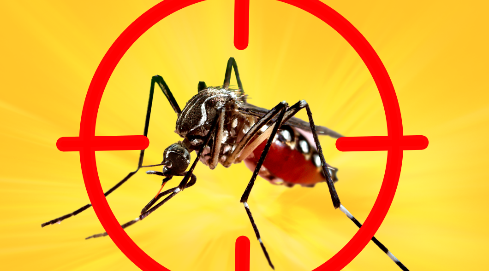
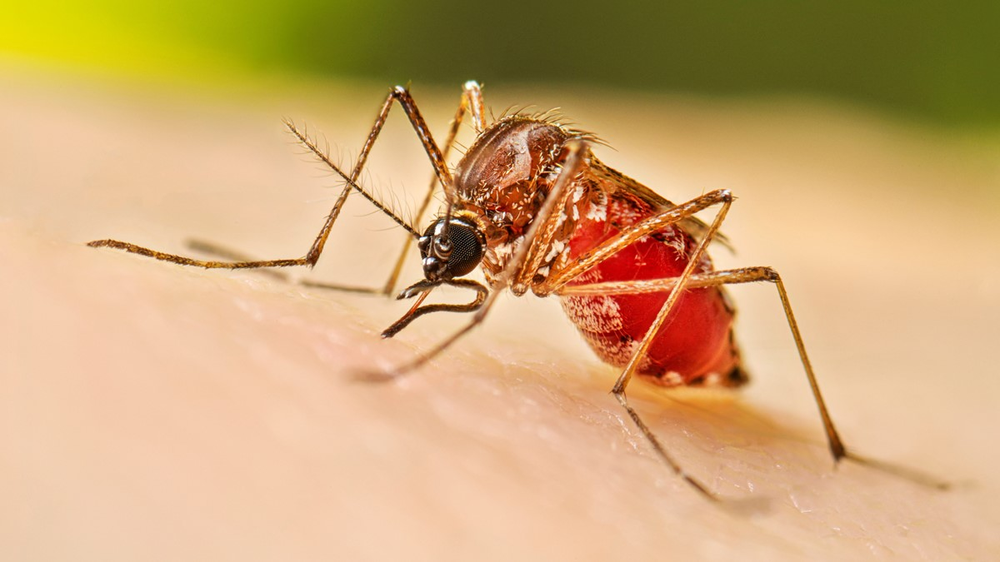
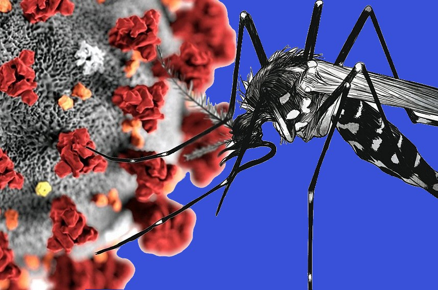
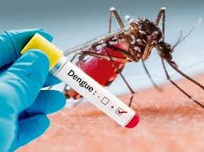

Confira algumas noticias sobre a doença!


Estudo da Uerj adverte sobre efeitos das mudanças climáticas nos casos de dengue no Rio de Janeiro

Com mais de 530 mil casos prováveis, Brasil chega a 90 mortes por dengue em 2024

Painel covid-19 x dengue: sistema digital traz mapa interativo de casos

Arboviroses - Casos de dengue registram segunda semana de redução no Estado.